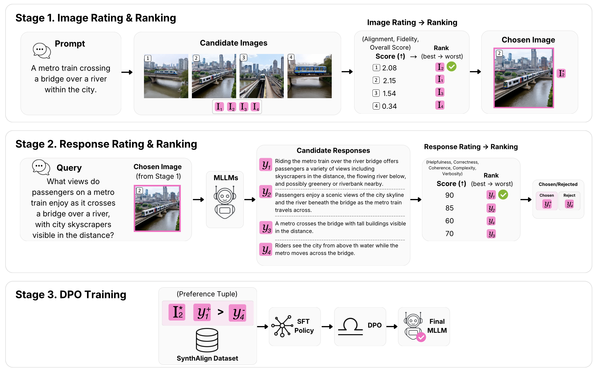
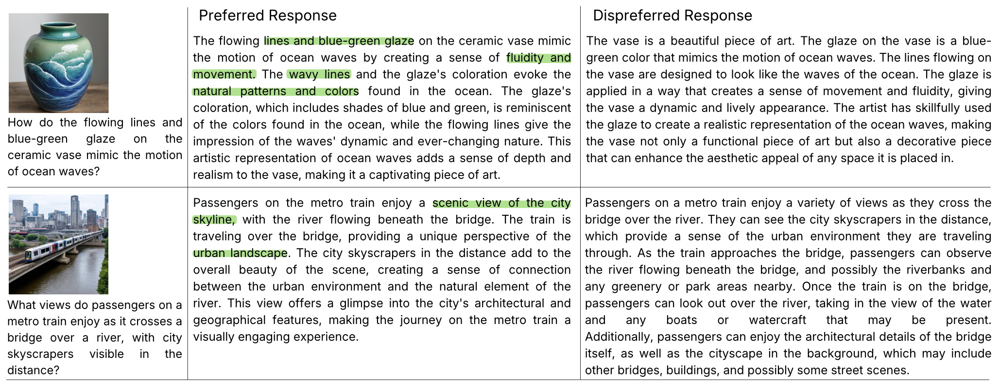
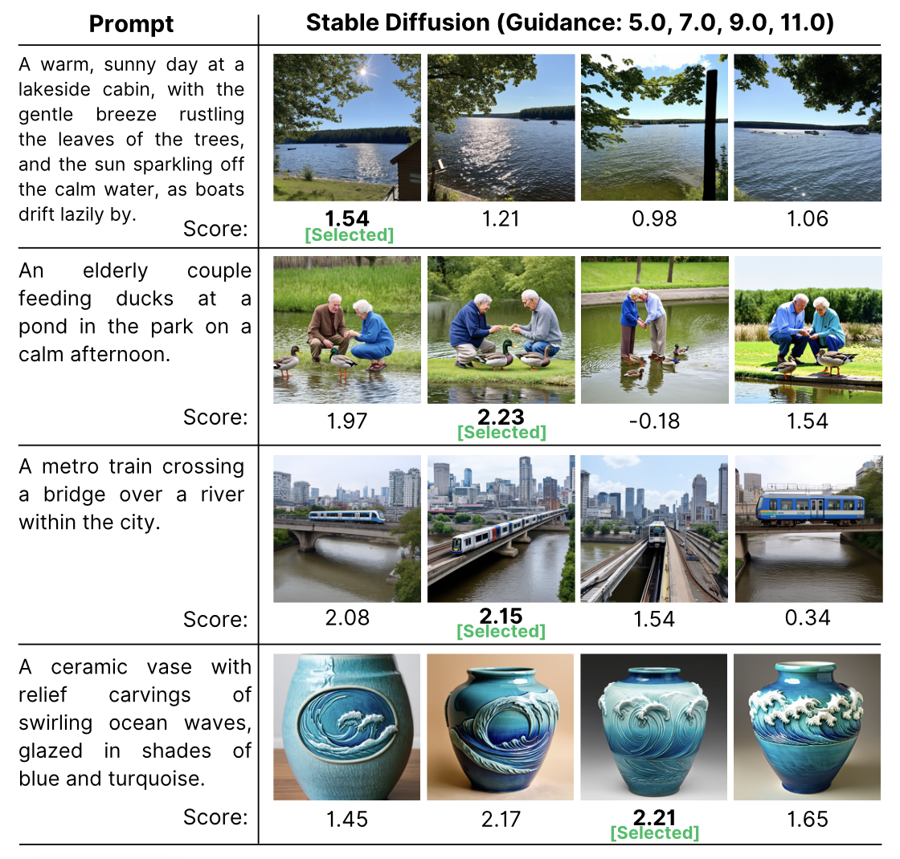
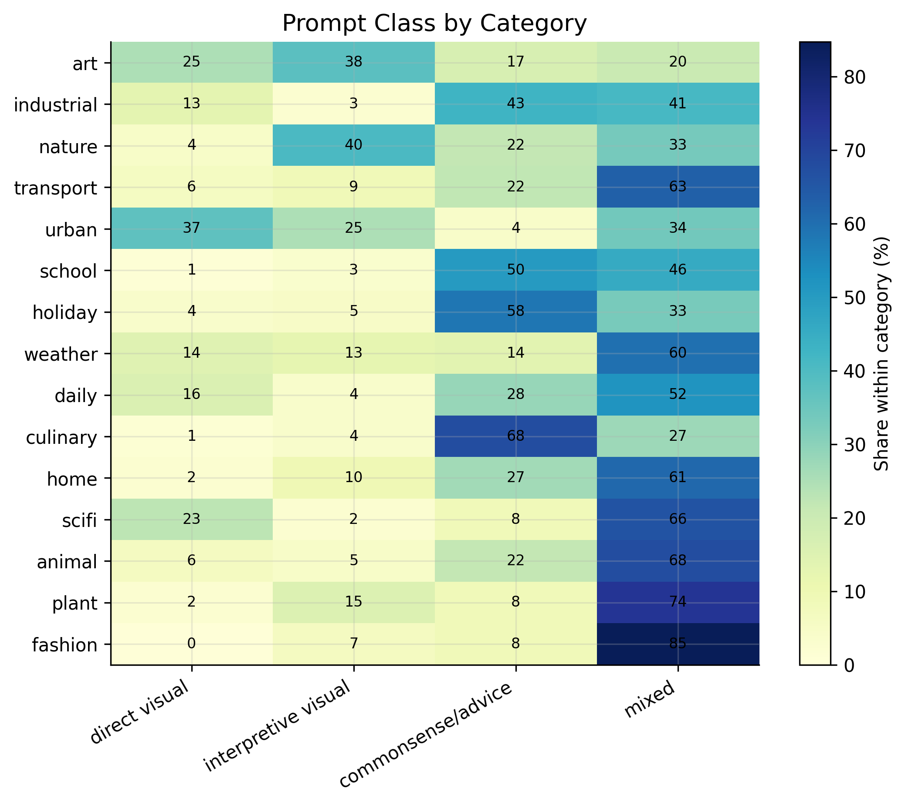
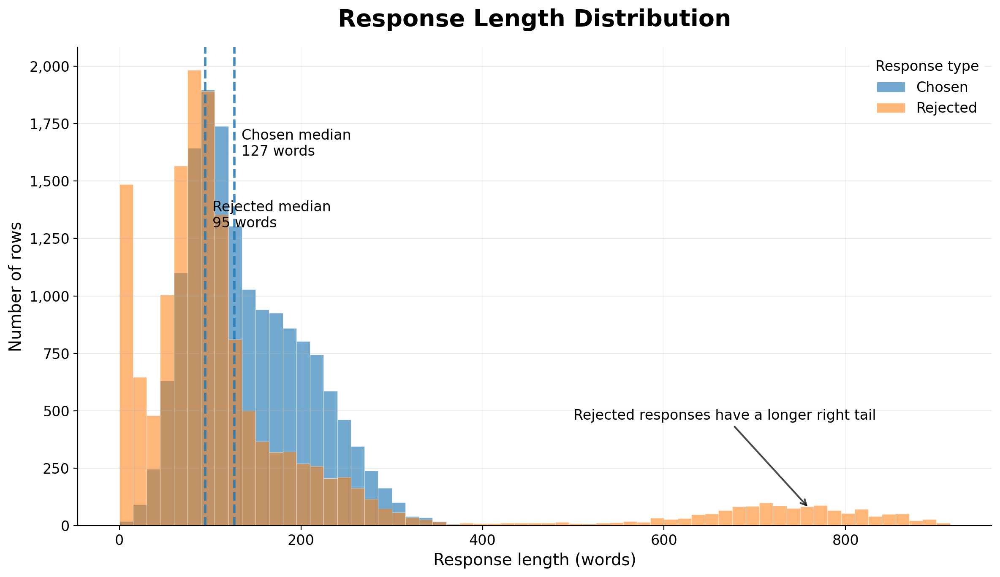
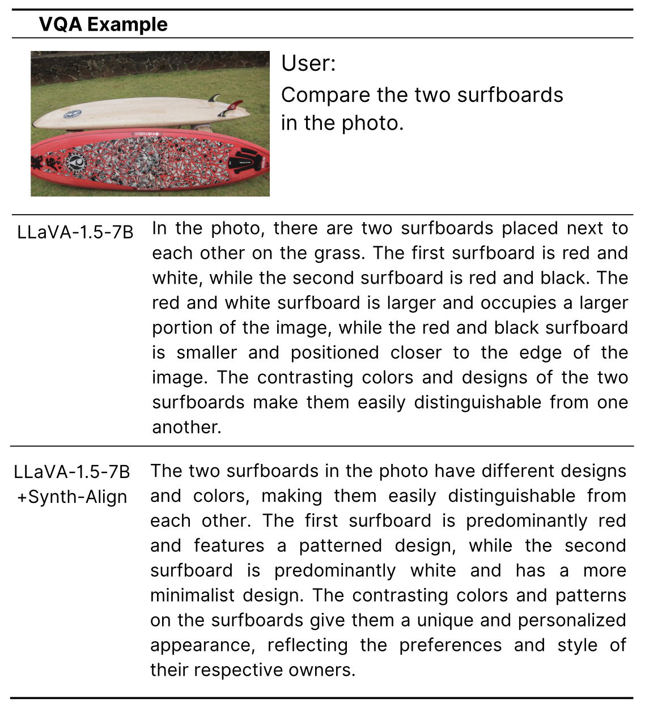

REWARD-GUIDED SYNTHETIC PREFERENCE DATA
Mitigating Hallucination in Multimodal LLMs
with Reward-Guided Synthetic Data
Singapore University of Technology and Design
Synthetic images. Reward-ranked responses. Preference-based post-training.
Abstract
Multimodal language models can generate fluent answers that contain details unsupported by an image. SynthAlign investigates reward-guided synthetic preference data for mitigating these hallucinations through direct preference optimization (DPO). The pipeline selects synthetic images with ImageReward, generates candidate responses with open-source multimodal models, and uses ArmoRM to construct chosen–rejected response pairs. Evaluations examine hallucination and general visual question answering, alongside analyses of the resulting data and the limitations of reward-based supervision.
THE FRAMEWORK
From synthetic images to preference pairs
Two reward-guided selection stages, followed by DPO post-training.

- 1
Image rating & ranking
Generate candidate images and select the highest ImageReward score, conditioned on the text-to-image prompt.
Rimg(image, prompt) - 2
Response rating & ranking
Generate image-conditioned answers with four multimodal models. ArmoRM ranks the question–answer pairs.
Rresp(question, answer) - 3
DPO post-training
Use higher- and lower-scoring responses as chosen and rejected answers to post-train the multimodal backbone.
(image, question, y+, y−)
BENCHMARKS
Hallucination and visual question answering
Results reported in the revised manuscript, separated by backbone.
These tables reproduce the manuscript snapshot of 26 September 2026, with Qwen2-VL training sizes corrected to 2K. They do not include the ongoing full-9K A–F ablation runs. Published reference systems are omitted here to avoid treating cross-paper results as controlled comparisons.
2.363.49
LLaVA-1.5-7B · vanilla → DPO-9K51.0%25.0%
A 26.0 percentage-point reduction86.1%87.6%
A 1.5 percentage-point increaseHallucination benchmarks
Bold indicates the best reported value within each backbone block, including ties. ↑ higher is better; ↓ lower is better.
| Model | MMHal-Bench | AMBER | POPE | |||
|---|---|---|---|---|---|---|
| Score ↑ | Hall. ↓ | CHAIR ↓ | Cog ↓ | Acc. ↑ | Precision ↑ | |
| LLaVA-1.5-7B | ||||||
| Vanilla | 2.36 | 51.0 | 7.7 | 4.2 | 86.1% | 89.1% |
| + SynthAlign-DPO-9K | 3.49 | 25.0 | 6.4 | 3.1 | 87.6% | 97.8% |
| Qwen2-VL-7B | ||||||
| Vanilla | 4.1 | 18.7 | 6.8 | 5.9 | 88.3% | 93.0% |
| + SynthAlign-SFT-2K | 3.9 | 24.0 | 5.3 | 2.9 | 88.5% | 93.0% |
| + SynthAlign-DPO-2K | 4.7 | 14.9 | 5.8 | 3.1 | 88.4% | 93.0% |
Source: revised manuscript, Table 1. LLaVA uses 9K preference pairs; Qwen2-VL uses 2K training examples. Results across these blocks do not constitute a data-budget-matched comparison.
General VQA benchmarks · LLaVA-1.5-7B
| Model | ScienceQA ↑ | MME ↑ | VizWiz ↑ | MMMU ↑ | SEED-img ↑ | MM-Vet ↑ |
|---|---|---|---|---|---|---|
| Vanilla | 66.8 | 355.7 | 50.0 | 35.9 | 66.1 | 31.1 |
| + SynthAlign-DPO-9K | 69.0 | 367.5 | 55.3 | 36.1 | 66.3 | 34.1 |
| + SynthAlign-DPO-12K | 69.4 | 378.2 | 55.2 | 36.2 | 66.3 | 33.4 |
Source: revised manuscript, Table 2. All rows use the Vicuna-7B language backbone. Metrics retain the manuscript’s reporting scale; no cross-benchmark average is computed.
INSIDE THE DATA
Inspect the preferences, not just the scores
Synthetic image candidates, response pairs, and dataset-level diagnostics.

How image candidates are selected

Prompt diversity

Response length

QUALITATIVE EXAMPLE
What changes in the response?
A side-by-side example from the manuscript.

“Compare the two surfboards in the photo.”
The aligned model describes the boards’ dominant colors more accurately in this example.
However, its interpretation of the owners’ preferences is not established by the image. The example illustrates a change in response quality, not the elimination of hallucination.
Read the paper for the full study →